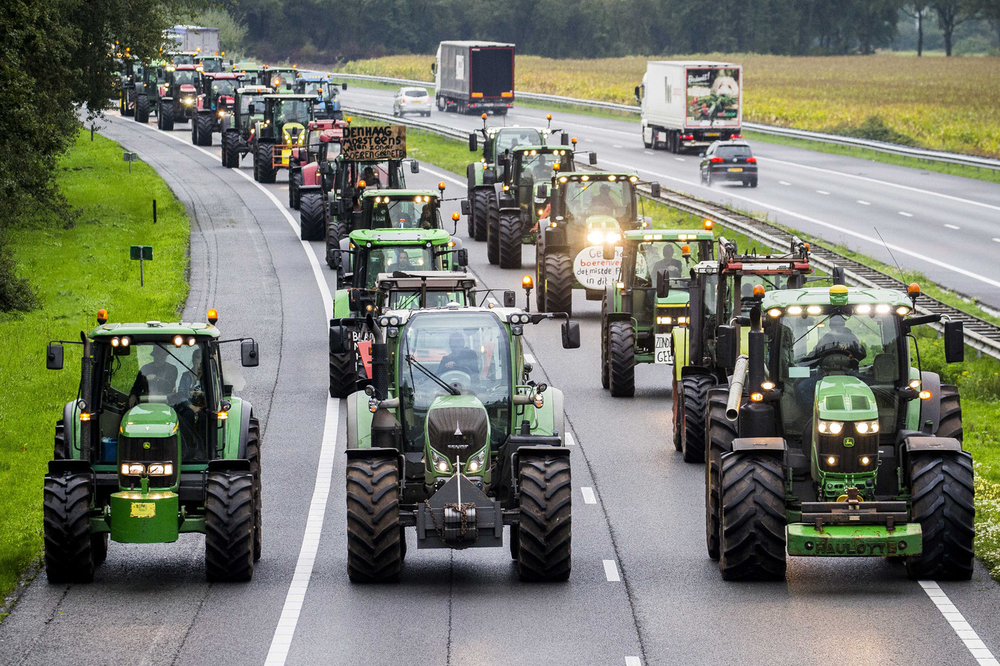

Politieke beloftes aan boeren: de oogst is alvast een succes

1. WEG MET ONEERLIJKE HANDELSAKKOORDEN
“Ik ben voorstander van handelsakkoorden met de rest van de wereld maar dan wel mét dèzèlfde spelregels'. Zoals het er nu naar uitziet, gaan we hier activiteiten verbieden waardoor we geen voedsel meer produceren, om dan vervolgens producten te importeren die niet voldoen aan onze regels.” Premier Alexander De Croo (Open Vld) pleitte in De zevende dag voor een bijsturing van “scheef onderhandelde” handelsakkoorden, zodat onze boeren met dezelfde wapens strijden als hun concurrenten buiten Europa.
Een veelgenoemd handelsverdrag is dat tussen de EU en de Mercosur: Brazilië, Argentinië, Uruguay en Paraguay. Landen die producten zoals rundsvlees en soja exporteren. In 2019 bereikte de EU hierover een akkoord, maar al van in het begin weerklonk er bij boeren en milieuorganisaties kritiek omdat de Mercosur-landen minder strenge normen qua duurzaamheid opgelegd krijgen. “Het akkoord hangt echt aan een zijden draadje. De kans lijkt me groot dat het akkoord geofferd zal worden om tegemoet te komen aan de woede van de landbouwers”, verwacht Ferdi De Ville, professor Europees handelsbeleid (UGent).
Wat met andere akkoorden zoals met Canada, Nieuw-Zeeland of Australië? “Afgesloten akkoorden heronderhandelen is heel moeilijk omdat de EU dan op andere domeinen forse toegevingen moet doen”, zegt De Ville. “Wel kan ik me voorstellen dat er in toekomstige akkoorden steeds vaker een 'spiegelclausule' zal worden opgenomen, een eis die de Fransen al jaren op tafel leggen. Zo'n clausule stelt dat geïmporteerd voedsel conform moet zijn aan de strenge regelgeving in de EU.”
2. VERSOEPEL EUROPESE REGELS
De redenering is logisch als we de regels voor buitenlandse boeren niet kunnen verstrengen, dan kunnen we misschien onze eigen regels versoepelen? Zowel de Green Deal als de natuurherstelwet legt strenge normen op aan de landbouw. Daarom zei Vlaams minister van Omgeving Zuhal Demir (N-VA) al dat politici de voorbije jaren te snel 'op hetgroene knopje' hebben geduwd in Europa zonder na te denken over de gevolgen.
De Europese klimaatwet zal niet zomaar worden geschrapt. Wel komt ze steeds meer onder druk te staan. Het is niet ondenkbaar dat het ambitieniveau na de Europese verkiezingen van juni toch wat naar beneden wordt bijgesteld. Idem met de natuurherstelwet, die in maart op een Europese raad komt. In aanloop naar die raad zullen de gewesten -ven vervolgens ook België - hun standpunt moeten bepalen. De kans is reëel dat de Vlaamse regering zich alweer zal verzetten. Maar dat we de beschadigde Europese natuur moeten herstellen, erkent iedereen.
Het is met dat Europa niets doet. Europees Commissievoorzitter Ursula von der Leyen beloofde afgelopen week om de administratieve rompslomp voor de boeren te verkleinen. Ook besliste ze om een voorwaarde om Europese subsidies te krijgen - dat boeren 4 procent van hun akkers braak moeten laten liggen -nog minstens een jaar uit te stellen.
'Ik geloof heel sterk dat de oplossing op Europees niveau gevonden moet worden' GINO VAN OSSEL RETAILEXPERT (VLERICK BUSINESS SCHOOL)
3. COMPENSEER DE BOEREN VOOR HUN LAGE PRIJZEN
Hoe zorg je dat boeren een eerlijke prijs krijgen voor hun producten? Door een solidariteitsmechanisme uit de grond te stampen, zei De Croo in De zevende dag. Dit moet zorgen dat radicale prijsschommelingen, bijvoorbeeld door slechte oogsten, niet alleen bij landbouwers terechtkomen. De bedoeling is om landbouwers voedselverwerkers en de distributiesector te laten bijdragen aan een soort verzekeringssysteem of een fonds dat bijspringt als verkoopprijzen voor landbouwproducten te laag zijn.
Volgens retailexpert Gino Van Ossel (Vlerick Business School) lost zo'n mechanisme de kern van het probleem niet op, namelijk dat boeren op het einde van de rit te weinig overhouden. Hij vraagt zich af hoe je de bijdragen van alle spelers in de voedselketen bepaalt.
“Het beeld van de arme boeren versus de supermarkten die woekerwinsten boeken klopt niet. Veel supermarkten verdienen bijzonder: weinig geld. Ze moeten hier samen uit geraken, klinkt het.
In essentie is iedere maatregel op Belgisch niveau gedoemd om te mislukken, vreest Van Ossel. Daarmee dreigen we bedrijven namelijk weg te jagen naar andere landen. “Ik geloof heel sterk dat de oplossing op Europees niveau gevonden moet worden.”
4. BYEBYE STIKSTOFREGELS
Het was een van die verhalen die gretig werden opgepikt door de protesterende boeren; na een overleg met de Vlaamse regering zou die laatste dan toch bereid zijn om haar vermaledijde stikstofdecreet aan te passen.
Quod non, zegt de woordvoerder van minister Demir. “We hebben heel duidelijk gezegd dat we dat decreet niet meer gaan aanpassen.” Wel zal de regering vroeger starten met de voorbereiding van de stikstofregels die vanaf 2030 zullen gelden. Vanaf dan zal Vlaanderen overstappen naar een ander rekenmodel om een overdaad aan stikstof te meten. De bedoeling is om hier de komende maanden al mee te starten. Maar op korte termijn verandert het voor de boeren weinig.
Vandaag zitten de landbouworganisaties weer samen met de Vlaamse regering. Ze hopen daar onder meer te horen dat landbouwgronden beternbeschermd worden en dat hun administratieve last omlaaggaat.